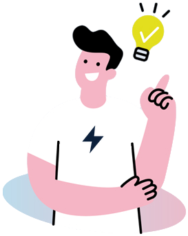

SubitoElettrico Report - Numero 2 - La ricarica, parte prima
Dove ricarico? Probabilmente da nessuna parte
La paura della ricarica frena l'elettrica. I chilometri che fanno davvero i tuoi clienti raccontano un'altra storia.
Sabato mattina, il cliente ha già provato l'auto e gli è piaciuta. Poi arriva la domanda: "E dove la ricarico?". Il venditore apre l'app delle colonnine e comincia a mostrare la mappa. In quel momento la trattativa ha cambiato argomento, e non in meglio.
La domanda è legittima, ma nella maggior parte dei casi la risposta onesta è un'altra: a casa, di notte. Oppure da nessuna parte, per giorni. Nasce da un'abitudine - il pieno dal benzinaio - più che da un bisogno. In questo numero mettiamo la paura accanto ai chilometri che gli italiani fanno davvero.
È il primo di tre numeri sulla ricarica: oggi l'uso reale, a gennaio la rete pubblica, a febbraio i costi. Come sempre, ogni blocco ha tre parti: il dato, che cosa ci dice e che cosa ne pensiamo noi. La terza è un'opinione e la chiamiamo così.
In questo numero, in tre numeri
Preferisci il PDF da girare in salone? Scaricalo qui ↓
La paura è vera, e non è la prima
di chi non ha un'elettrica teme di restare senza autonomia
Che cosa frena chi non ha un'elettrica, Italia
Che cosa ci dice
Il prezzo resta il primo freno, ma subito dopo arrivano due paure che parlano della stessa cosa: restare a piedi. Sono le paure di chi l'elettrica non l'ha mai guidata. Nel primo numero l'avevamo visto con i dati inglesi: dopo un solo test drive la paura della ricarica pubblica scende di 14 punti.

Che cosa ne pensiamo noi
Sul prezzo il venditore può fare poco: lo decidono listino e finanziaria. Sulla paura della ricarica può fare molto, e subito. Ma deve evitare l'errore più comune: rispondere con la mappa delle colonnine. Se il venditore parla di colonnine, il cliente capisce che ne avrà bisogno, e la paura cresce invece di sciogliersi. La paura è reale, il problema che descrive, quasi sempre, no.
Fonte: Osservatorio Auto e Mobilità, Luiss Business School, dicembre 2025. Cox Automotive Europe, 2026 UK EV report.
Quanto si guida davvero
la lunghezza media di uno spostamento in Italia
Spostamenti per distanza, primo semestre 2025
al giorno, in media, per ogni auto (10.231 km l'anno)
degli automobilisti fa meno di 30 km al giorno
La settimana di Marta, impiegata in provincia, con una batteria che fa 200 km reali (esempio)
Che cosa ci dice
Quasi 98 spostamenti su 100 restano sotto i 50 km, e l'81% sotto i 10. Con 28 km al giorno, una batteria che ne fa 200 reali copre una settimana intera: lavoro, spesa, piscina dei bambini e cena dai suoceri compresi. Chi esce con l'auto carica la mattina rientra la sera senza essersi fermato, e la ricarica la fa dove l'auto passa la notte.
Che cosa ne pensiamo noi
Il benzinaio ci ha abituati a pensare che il carburante si vada a prendere: si esce apposta, ci si ferma, si paga. Con l'elettrica, per la maggior parte dei clienti, il carburante aspetta a casa. La domanda "dove ricarico" ha già una risposta, e il venditore la trova chiedendo come il cliente usa l'auto, non mostrando dove sono le colonnine.
Fonti: Isfort, 22° Rapporto sulla mobilità degli italiani (primo semestre 2025); Istat, percorrenze dei veicoli circolanti (anno 2021, 28 km al giorno è un nostro calcolo); Luiss, dicembre 2025. I 200 km sono un esempio di calcolo, non una media di mercato.
La ricarica sta dove dorme l'auto
di chi ha un'elettrica la ricarica soprattutto a casa o in ufficio
di chi non ha un'elettrica non ha dove ricaricarla a casa. Il 41% non può farlo al lavoro.
Che cosa ci dice
Due proprietari su tre ricaricano soprattutto dove l'auto sta ferma comunque: a casa o in ufficio. E in Europa oltre nove punti di ricarica su dieci sono privati, non pubblici. La colonnina pubblica è il complemento, non la base. La vera linea che divide i clienti non passa quindi tra chi ha una colonnina vicina e chi no. Passa tra chi ha un posto dove l'auto dorme e chi parcheggia in strada.
Che cosa ne pensiamo noi
Nelle grandi città il box spesso non c'è, e non per scelta. Ma in città l'auto si usa meno e per tragitti più brevi, perché le alternative esistono. Fuori dalle città, dove le case indipendenti sono più comuni, avere un punto di ricarica privato è più facile di quanto il cliente immagini. Per un concessionario di provincia la domanda giusta, prima ancora del modello, è: dove dorme la sua auto?
Fonti: PwC Strategy&, eReadiness 2026 (circa 19.000 consumatori in 31 Paesi); ChargeUp Europe, State of the Industry 2025 (punti di ricarica UE a fine 2024); Osservatorio Luiss, dicembre 2025.
Per chi non è
i km percorsi in un anno da un'auto elettrica e da una a benzina
Chilometri medi annui per alimentazione, Italia
Che cosa ci dice
Chi l'elettrica ce l'ha la usa quasi il doppio di chi ha la benzina, più di chi ha il diesel. L'autonomia non sembra fermarli. Va detto però che oggi l'elettrica la compra soprattutto chi guida molto e sa già dove ricaricare. Il dato è del 2021 e risente della pandemia.
Che cosa ne pensiamo noi
C'è un cliente a cui l'elettrica non va proposta: chi fa centinaia di chilometri al giorno, tutti i giorni, senza un posto fisso dove fermarsi. Dirglielo è la vendita più credibile che un salone possa fare, e lo riporterà da te per l'auto successiva. Chi invece non ha il box ma fa pochi chilometri ha un tema diverso: ricaricare fuori, una volta a settimana. Ne parliamo nel prossimo numero.
Fonte: Istat, Le percorrenze dei veicoli stradali circolanti, anno 2021.
La nostra tesi
"Dove ricarico?" non si risponde con una mappa. Si risponde con una domanda: quanto guidi?
Quasi nessuno ne ha motivo.
Non alla colonnina.
Non è il suo cliente.
Sono nostre opinioni, costruite sui dati di questo numero.
Da stampare e tenere sul banco
Tre domande prima di parlare di ricarica
Meno di 50 km al giorno
+ posto a casa
Elettrica
Si ricarica di notte, come il telefono.
Meno di 50 km al giorno
senza posto a casa
Elettrica + un piano
Una ricarica fuori a settimana. Dove: numero 3.
Tanti km ogni giorno
senza soste fisse
Ibrida o termica
Oggi è la risposta onesta.
Dati e fonti complete
Mobilità
- Isfort, 22° Rapporto sulla mobilità degli italiani, Osservatorio Audimob, primo semestre 2025: spostamento medio 9,2 km (11,2 nel 2019); fino a 2 km 32,8%, fino a 10 km 81,3%, da 10 a 50 km 16,4%, oltre 50 km 2,2%; quota dell'auto sugli spostamenti 60,8%.
- Istat, Le percorrenze dei veicoli stradali circolanti (5 giugno 2025, anno 2021): 10.231 km medi per auto; elettrica 13.581, ibrida benzina 13.264, gasolio 12.640, benzina 7.005.
Percezioni
- Osservatorio Auto e Mobilità, Luiss Business School (dicembre 2025), tra chi non ha un'elettrica: prezzo troppo alto 72%, timori sull'autonomia 67%, rete autostradale insufficiente 58%, senza ricarica domestica 44%, senza ricarica al lavoro 41%, meno di 30 km al giorno 90%.
- Cox Automotive Europe, 2026 UK EV report: dopo un test drive la paura della ricarica pubblica scende da 47% a 33%.
Ricarica
- PwC Strategy&, eReadiness 2026: il 65% dei proprietari di auto elettrica ricarica principalmente a casa o in ufficio.
- ChargeUp Europe, State of the Industry 2025: oltre 9 punti di ricarica su 10 nell'Unione europea sono in luoghi privati (7,8 milioni a fine 2024).
Fonti
- Isfort, 22° Rapporto sulla mobilità degli italiani, sintesi, 20 novembre 2025.
- Istat, Le percorrenze dei veicoli stradali circolanti, 5 giugno 2025.
- Luiss Business School, Osservatorio Auto e Mobilità, riportato da Rinnovabili, 17 dicembre 2025.
- PwC Strategy&, eReadiness 2026, riportato da Quattroruote, 1 ottobre 2026.
- ChargeUp Europe, 2025 State of the Industry.
- Cox Automotive Europe, 2026 UK EV adoption and perceptions report (riportato da AM).
Nel prossimo numero. 88.000 punti di ricarica in Italia, e una colonnina lavora in media mezz'ora al giorno. Perché la colonnina non è un benzinaio.
Il report completo
Scarica il PDF, con la scheda da stampare
Le quattro analisi, la tesi, le fonti e la scheda con le tre domande da tenere sul banco. Ogni mese ne esce uno nuovo.
Lasci l'email, scarichi subito il PDF e ricevi i prossimi numeri, uno al mese. Ti cancelli con un clic. Titolare: Alex Pallotti, informativa privacy.
Preferisci scrivere due righe? tony@subitoelettrico.it